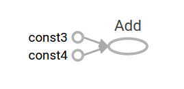
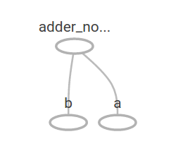
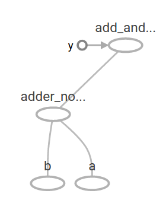
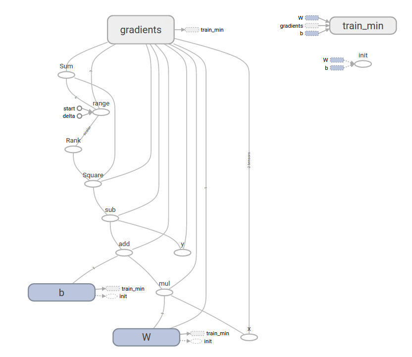

Tensorflow教程
Tensorflow入门
介绍
本指南让您开始在TensorFlow中编程。在使用本指南之前， 请先 安装TensorFlow。为了从本指南中获得最大的帮助，您应该先了解以下内容：
- 如何用Python编程。
- 至少有一点关于数组。
- 最理想的情况下是对机器学习有些许认知。但是，如果您对机器学习知之甚少，那么这仍然是您应该阅读的第一本指南。
TensorFlow 提供了多个 api。最低级别的 API–TensorFlow Core 为您提供完整的程序控制。我们建议将 TensorFlow Core 作为机器学习研究人员和其他需要良好水平的人的控制模型。更高层次的 api 是建立在 TensorFlow Core 之上的。这些更高层次的 api 通常比 TensorFlow Core 更容易学习和使用。此外, 较高级别的 api 重复任务更容易, 并且在不同用户之间更加一致。像高级 API比如 tf.estimator 可以帮助您管理数据集、估计、培训和推断。
本指南从 TensorFlow Core 的教程开始。稍后, 我们将演示如何在 tf.estimator 中实现相同的模型。了解 TensorFlow Core 原理有很大作用, 当您使用更紧凑的高级 API 时, 更清楚内部事物是如何工作的。
基本概念
- 使用图 (graph) 来表示计算任务.
- 在被称之为 会话 (Session) 的上下文 (context) 中执行图.
- 使用 tensor 表示数据.
- 通过 变量 (Variable) 维护状态.
- 使用 feed 和 fetch 可以为任意的操作(arbitrary operation) 赋值或者从其中获取数据.
Tensors(张量)
TensorFlow 中数据的中心单位是 tensor。tensor 由一组形成于任意维数数组的原始值组成。tensor 的 rank(秩) 是它的维数。下面是 tensor 的一些示例:
3 # 规模最小的张量是0阶张量，即标量，也就是一个数。 |
张量的阶数有时候也称为维度，或者轴，轴这个词翻译自英文axis。譬如一个矩阵[[1,2],[3,4]]，是一个2阶张量，有两个维度或轴，沿着第0个轴（为了与python的计数方式一致，本文档维度和轴从0算起）你看到的是[1,2]，[3,4]两个向量，沿着第1个轴你看到的是[1,3]，[2,4]两个向量。
TensorFlow 核心教程
导入 TensorFlow 模块
import tensorflow as tf |
这使 Python 可以访问 TensorFlow 的所有类、方法和符号。大多数文档假定您已经完成了此操作。
计算图
你可能会想到TensorFlow核心程序由两个独立的部分组成：
- 构建计算图
- 运行计算图
一个计算图是将一系列的 TensorFlow 操作(Operation)排列成一个节点图。让我们建立一个简单的计算图。每个节点以零或更多张量作为输入, 并生成一个张量作为输出。有一种类型的节点是常量。像所有的 TensorFlow 常量一样, 它不需要输入, 并且输出一个它在内部存储的值。我们可以创建两个浮点张量 node1 和 node2 如下:
node1 = tf.constant(3.0, dtype=tf.float32) |
当它运行时，会输出Tensor("Const:0", shape=(), dtype=float32) Tensor("Const_1:0", shape=(), dtype=float32)
请注意, 打印节点不会像您预期的那样输出值3.0 和4.0，相反, 它们是在计算时将分别产生3.0 和4.0 的节点，要实际评估节点, 我们必须在一个会话(session)中运行计算图，会话封装了 TensorFlow 运行时的控制和状态。
下面的代码创建一个 session 对象, 然后调用其 run 方法以运行足够的计算图来计算 node1 和 node2。通过在会话(session)中运行计算图, 如下所示：
sess = tf.Session() |
当它运行时，会输出[3.0, 4.0]
我们可以通过将张量节点与操作结合起来构建更复杂的计算（操作也是节点）。例如，我们可以添加两个常量节点并生成一个新的图，如下所示：
from __future__ import print_function |
当它运行时，会输出node3: Tensor("Add:0", shape=(), dtype=float32)
sess.run(node3): 7.0
TensorFlow 提供了一种称为 TensorBoard 的实用程序, 可以显示计算图的图片。下面是一个截图, 展示了 TensorBoard 如何直观地显示图:

事实上，这张图并不特别有趣，因为它总是产生一个固定的结果。一个图可以接受外部输入的参数，称为占位符(placeholder)。占位符是稍后提供值的保证。
a = tf.placeholder(tf.float32) |
上面三行有点像函数或 lambda, 我们在其中定义了两个输入参数 (a 和 b), 然后对它们进行操作。我们可以用多个输入来计算这个图, 它使用 feed_dict 参数到 run 方法来给占位符提供具体值:
print(sess.run(adder_node, {a: 3, b: 4.5})) |
当它运行时，会输出7.5
[3. 7.]
在 TensorBoard 中, 图形如下所示:

我们可以通过添加另一个操作使计算图更加复杂。例如,
add_and_triple = adder_node * 3. |
当它运行时，会输出22.5
计算图在 TensorBoard 中如下所示:

在机器学习中, 我们通常需要一个可以接受任意输入的模型, 比如上面的一个。为了使模型训练, 我们需要能够修改图形, 以获得相同的输入新的输出。变量(Variables)允许我们向图中添加训练参数。它们是用类型和初始值构造的:
W = tf.Variable([.3], dtype=tf.float32) |
常量在调用 tf.constant 时初始化, 它们的值永远不会改变。相反, 当调用 tf.Variable 时, 变量不会初始化。变量.若要初始化 TensorFlow 程序中的所有变量, 必须显式调用特殊操作, 如下所示:
init = tf.global_variables_initializer() |
重要的是 init 是一个 TensorFlow 子图, 它是初始化所有的全局变量的句柄。在我们调用 sess.run 之前, 变量是未初始化的。
由于 x 是占位符, 因此我们可以同时对 x 的多个值进行 linear_model 计算, 如下所示:
print(sess.run(linear_model, {x: [1, 2, 3, 4]})) |
当它运行时，会输出[0. 0.3 0.6 0.90000004]
我们已经建立了一个模型, 但我们还不知道它有多好。为了评估培训数据的模型, 我们需要一个 y 占位符来提供所需的值, 我们需要写一个损失函数。
损失函数(loss function)用于测量当前模型与所提供数据之间的距离。我们将使用一个标准的线性回归模型, 总结了目前模型和提供数据之间的方差之和。linear_model y 创建一个向量, 其中每个元素都是误差相应的delta。我们调用 tf.square 来给误差做平方计算。然后，然后,我们使用 tf.reduce_sum 来创建一个标量用来计算所有的平方差之和来将所有error实例抽象出来:
y = tf.placeholder(tf.float32) |
当它运行时，会输出23.66
我们可以通过将 W 和 b 的值重新指派为-1 和1的完美值来手动改进此项。变量初始化的值为 tf.Variable 提供 。可以使用 tf.assign 进行改变。例如，w＝1和B＝1是我们模型的最佳参数。我们可以相应地改变w和b：
fixW = tf.assign(W, [-1.]) |
当它运行时，会输出[array([-1.], dtype=float32), array([1.], dtype=float32)]
0.0
我们猜测 W 和 b 的 “完美” 值, 但机器学习的全部意义是自动找到正确的模型参数。在下一节中, 我们将演示如何完成此操作。
tf.train API
关于机器学习的完整讨论超出了本教程的范围。然而, TensorFlow 提供优化器(optimizers), 慢慢地改变每个变量, 以尽量减少损失函数(loss function)。最简单的优化器是梯度下降(gradient descent)。它根据该变量的损失函数的大小来修正每个变量。一般而言, 手工计算 symbolic derivatives 是单调乏味且容易出错的。因此, TensorFlow 可以自动产生 derivatives , 只给出一个描述的模型使用函数 tf.gradients 。为了简单起见, 优化器(optimizers) 通常为您执行此操作。例如,
optimizer = tf.train.GradientDescentOptimizer(0.01) |
sess.run(init) # reset variables to incorrect defaults. |
当它运行时，会输出[array([-0.9999969], dtype=float32), array([0.9999908], dtype=float32)]
现在我们已经完成了实际上的机器学习!虽然这个简单的线性回归模型不需要太多的 TensorFlow core 代码, 但使用更复杂的模型和方法将数据导入到模型中, 这就必须有更多的代码。因此, TensorFlow 为常见的模式、结构和功能(patterns,structures,and functionality)提供了更高级别的抽象(abstractions)。在下一节中, 我们将学习如何使用这些抽象。
完成代码
已完成的训练线性回归模型如下所示:
import tensorflow as tf |
当它运行时，会输出W: [-0.9999969] b: [0.9999908] loss: 5.6999738e-11
请注意, 损失是一个非常小的数字 (非常接近零)。如果您运行此程序, 您的损失可能与前面提到的损失完全相同, 因为模型是用伪随机值初始化的。
这个更复杂的程序仍然可以在 TensorBoard 中可视化:

tf.estimator
tf.estimator 是一个高级TensorFlow库,用于简化机器学习的机制,其内容包括:
- 训练循环
- 赋值循环
- 管理数据集
tf.estimator 定义了许多常见的模型。
基本用法
请注意使用 tf.estimator 使得线性回归变得多么简单:
# NumPy is often used to load, manipulate and preprocess data. |
当它运行时，可能会输出train metrics: {'average_loss': 1.0863615e-08, 'loss': 4.345446e-08, 'global_step': 1000}
eval metrics: {'average_loss': 0.002535033, 'loss': 0.010140132, 'global_step': 1000}
请注意, 我们的 eval 数据有更高的损失, 但它仍然接近于零。这意味着我们正在正确学习。
自定义模型
tf.estimator 不会将你禁锢在它预设的模型中。假设我们想要创建一个自定义模型。我们仍然可以通过 tf.estimator 保持高度抽象的数据集,喂养,训练等。为了说明,我们将展示如何用低级TensorFlow API实现自己的等效线性回归模型。
要使用 tf.estimator 定义一个自定义模型。我们需要使用 tf.estimator.Estimator。tf.estimator.LinearRegressor 实际上是 tf.estimator.Estimator 的一个子类。我们只是给 Estimator 提供一个函数 model_fn 来告诉 tf.estimator 怎样定义预测,训练步骤,和损失，而不是生成子类 Estimator。代码如下所示:
import numpy as np |
当它运行时，会输出train metrics: {'loss': 1.08032486e-10, 'global_step': 1000}
eval metrics: {'loss': 0.010101897, 'global_step': 1000}
注意，自定义model()函数的内容和低级API的手动循环训练模型十分相似。
下一步
现在您有了TensorFlow的基础知识。我们有几个教程,您可以看看了解更多信息。如果您是初学者的话，请看MNIST机器学习入门, 否则看深入探索MNIST.